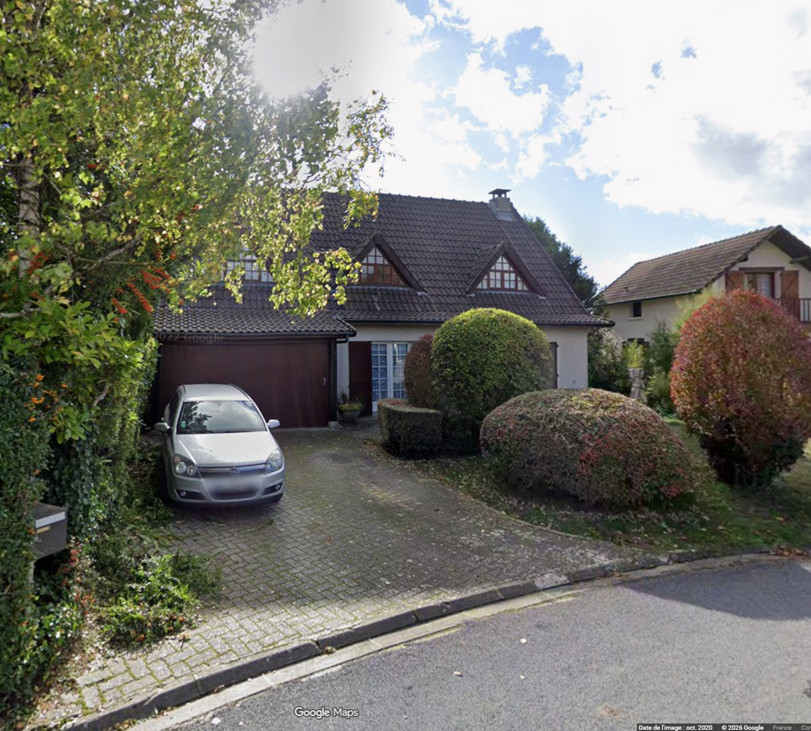
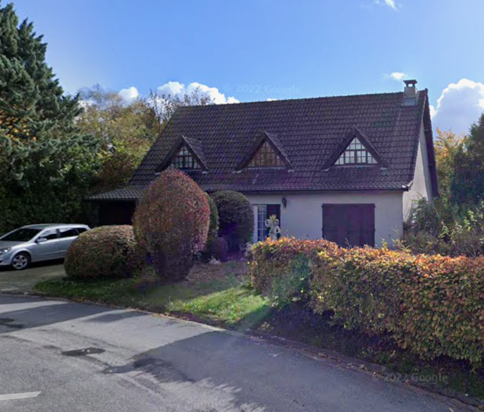
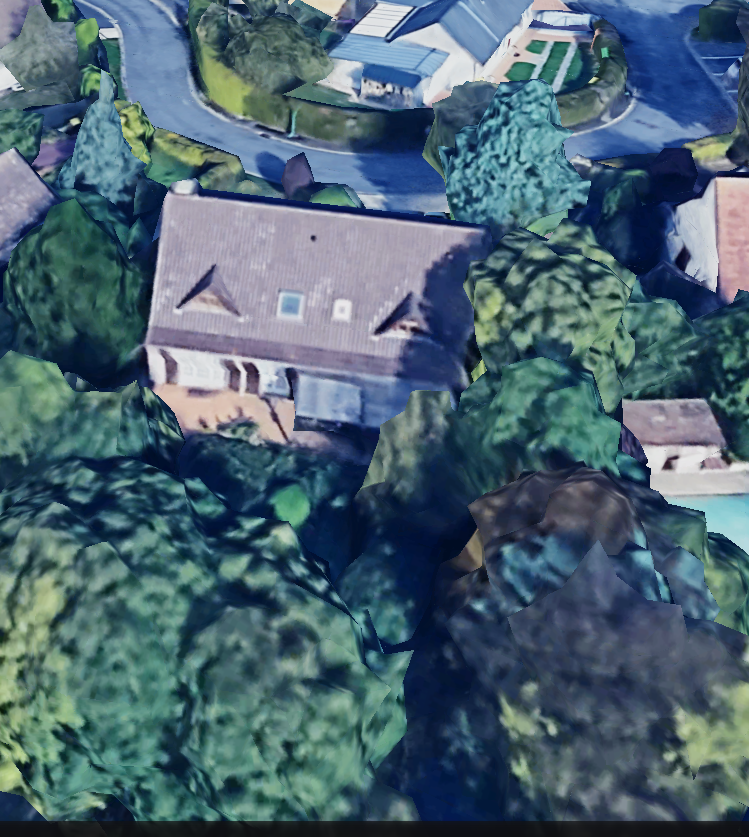
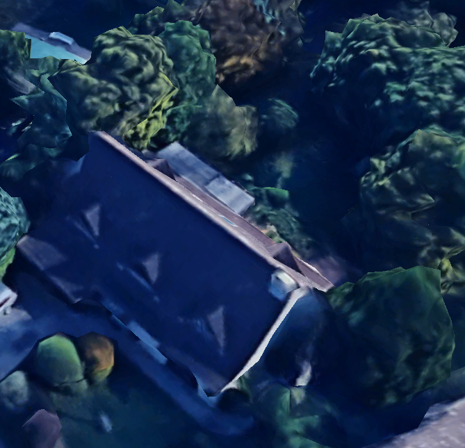
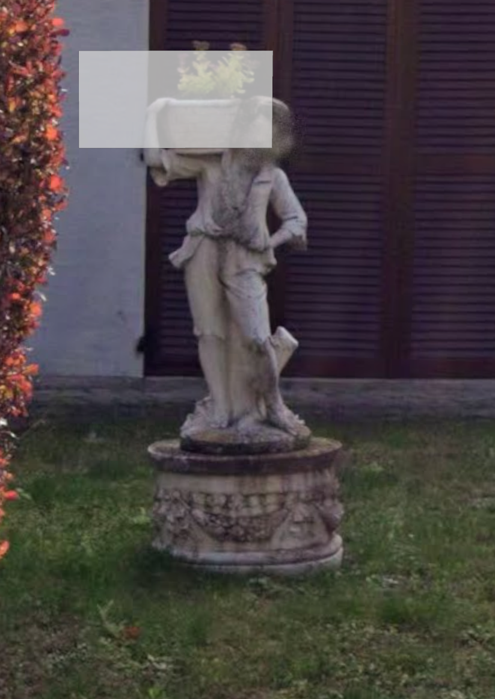
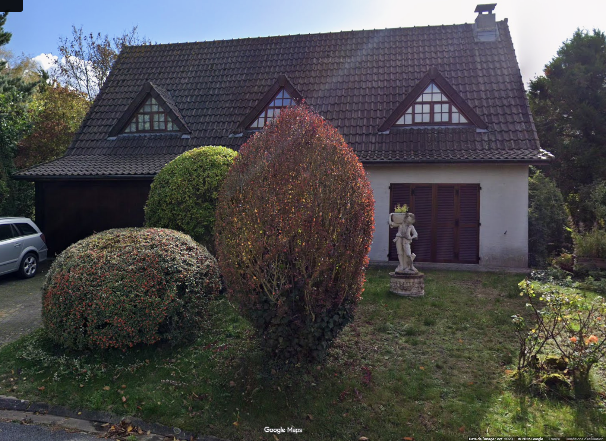
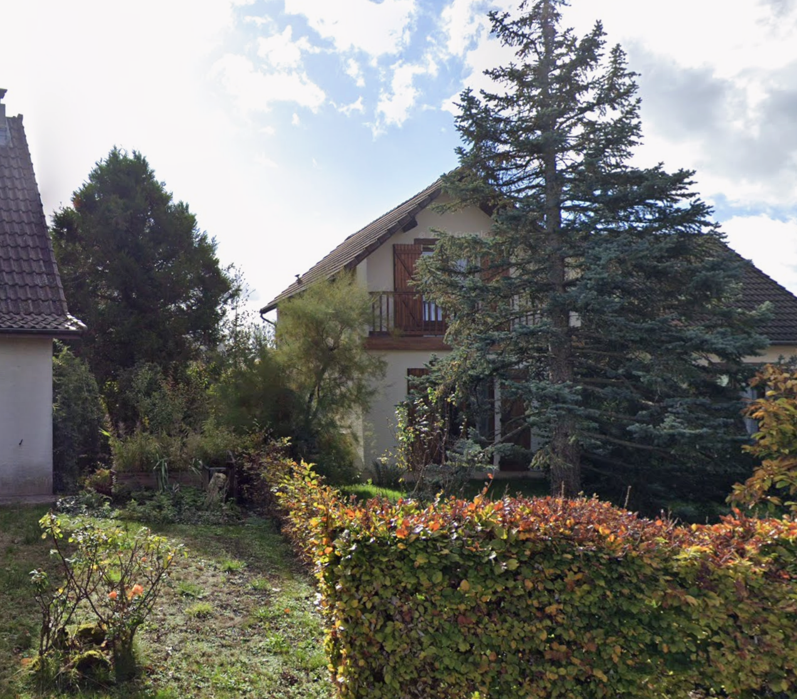
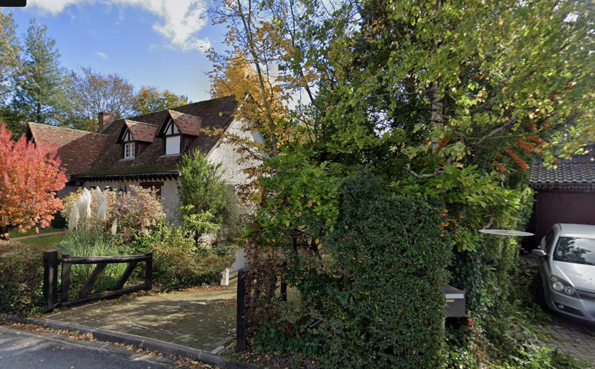

01 · Façade oblique et allée

Voir la maison dans la carte · Explorer le modèle
Repère du jeu : −413, 2800. Huit captures fournies, crédits Google Maps / Street View. Les proportions et limites du jardin sont estimées à partir de ces vues. Les deux voisines sont simplifiées.







